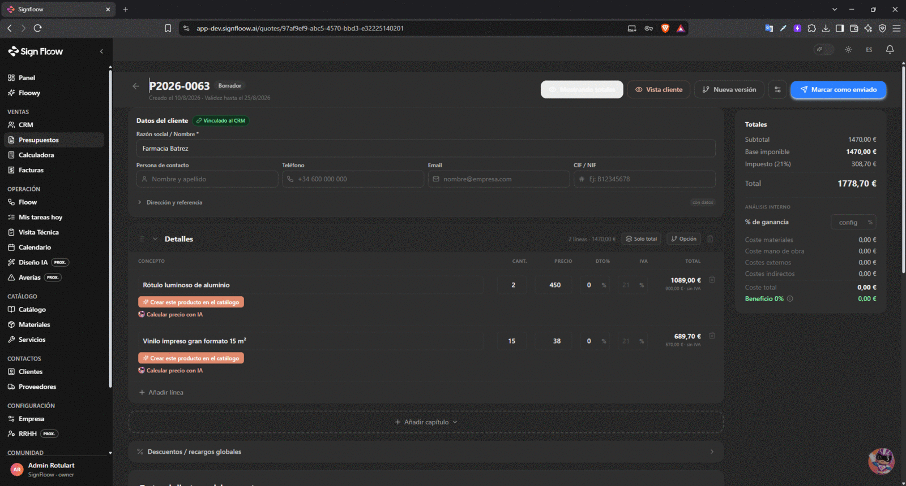
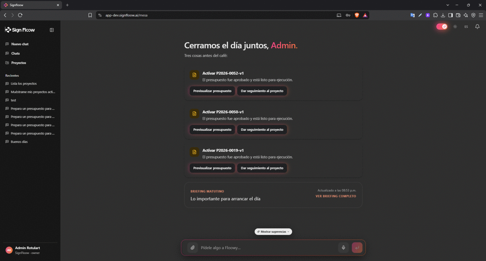

SaaS multi-tenant · React + NestJS + AWS
SignFloow
SaaS para empresas de rotulación: reemplaza planillas y mensajes por un tablero de producción, un catálogo con recetas de fabricación, presupuestos calculados por fórmulas y un asistente de IA que consulta los datos reales del negocio.
El problema
Los talleres del rubro manejan proyectos, materiales y presupuestos entre planillas, mensajes y memoria. Nadie sabe con certeza cuánto cuesta un trabajo hasta que ya se hizo.
Lo que construí
- Tablero multi-empresa con cinco fases, subtableros por taller y descomposición automática del proyecto en tareas de producción.
- Motor de presupuestos con fórmulas, capítulos, tarifas de mano de obra y costes indirectos.
- Enlace público de aceptación que, al aceptarse, crea el proyecto en el tablero.
- Catálogo con lista de materiales por dimensión y 91 materiales preconfigurados del rubro.
- Asistente de IA con acceso a herramientas sobre los datos de cada empresa, con dos proveedores y conmutación automática.
- Control de acceso por rol y aislamiento total entre empresas.
- Infraestructura como código y despliegue automatizado sin credenciales estáticas.
Resultado
- 1.551+tests automatizados
- ~90%de cobertura
- ~130pull requests
Capturas

assets/proyectos/signfloow/01-floow-kanban.png

assets/proyectos/signfloow/03-quote-engine.png

assets/proyectos/signfloow/06-catalogo-bom.png

assets/proyectos/signfloow/07-floowy-chat.png
Stack
TypeScript · React 19 · Vite · Tailwind · NestJS 11 · PostgreSQL 16 · Prisma · Turborepo · AWS ECS Fargate y Aurora · Terraform · Vercel